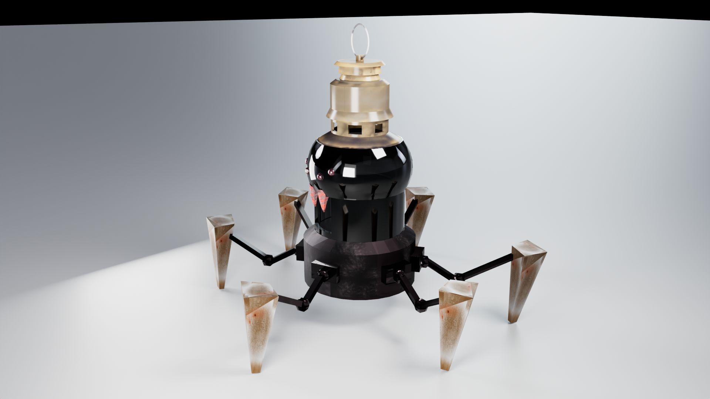
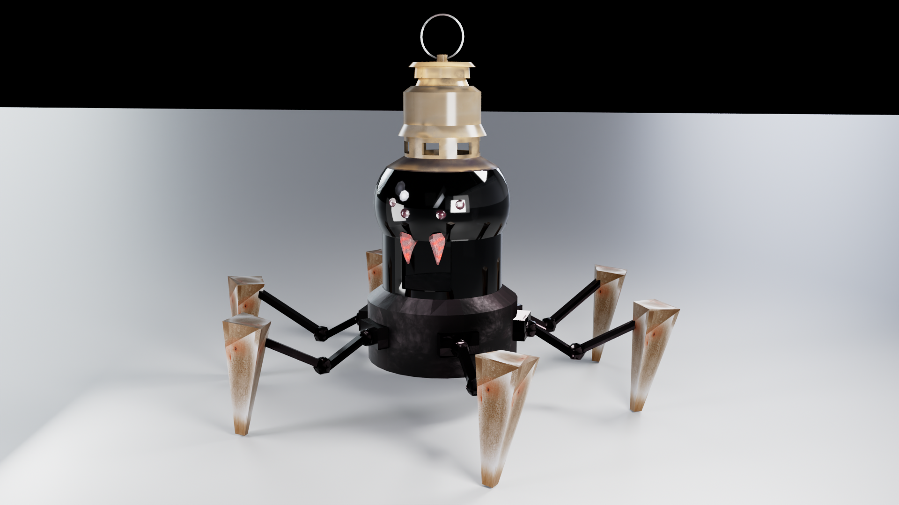
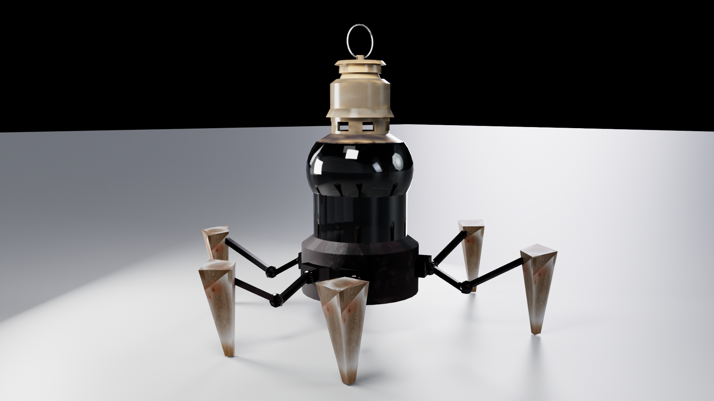
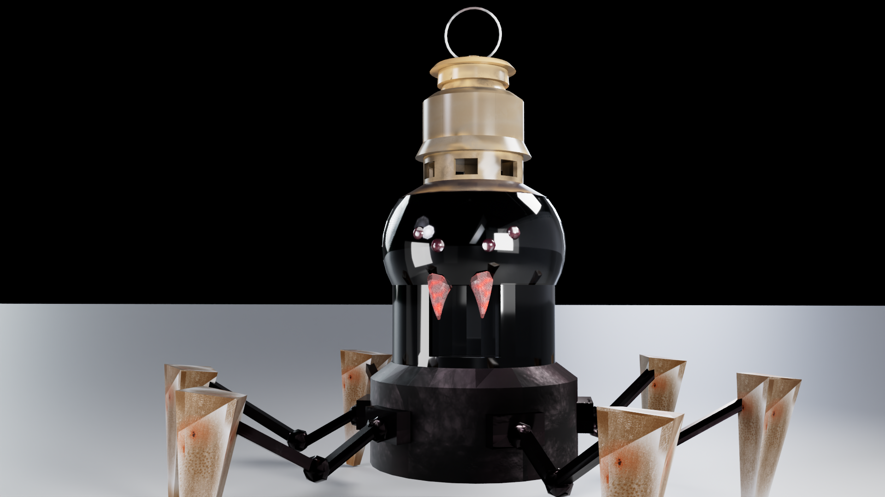
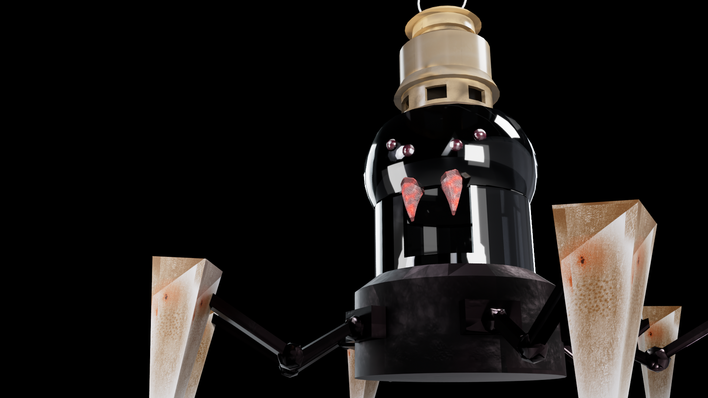
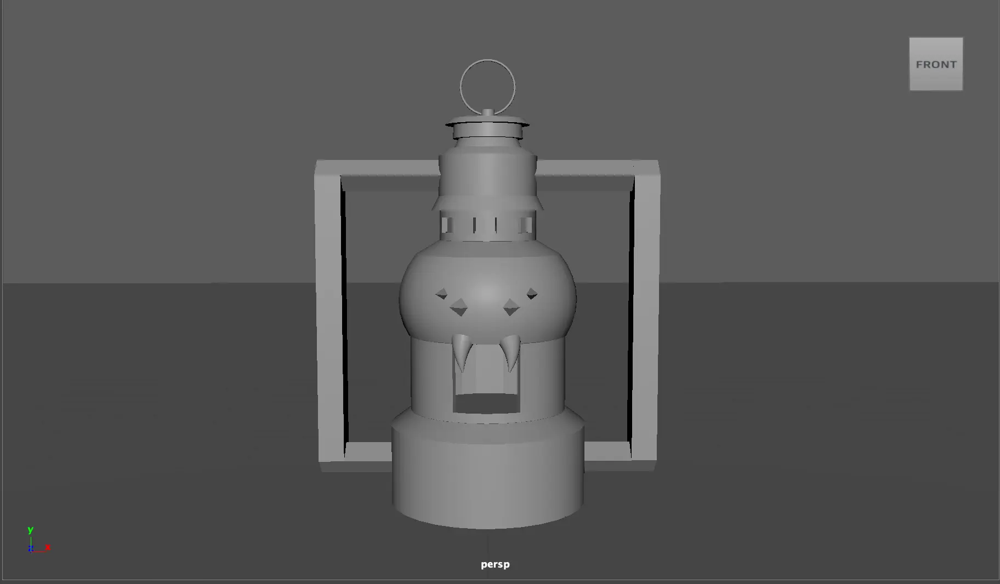
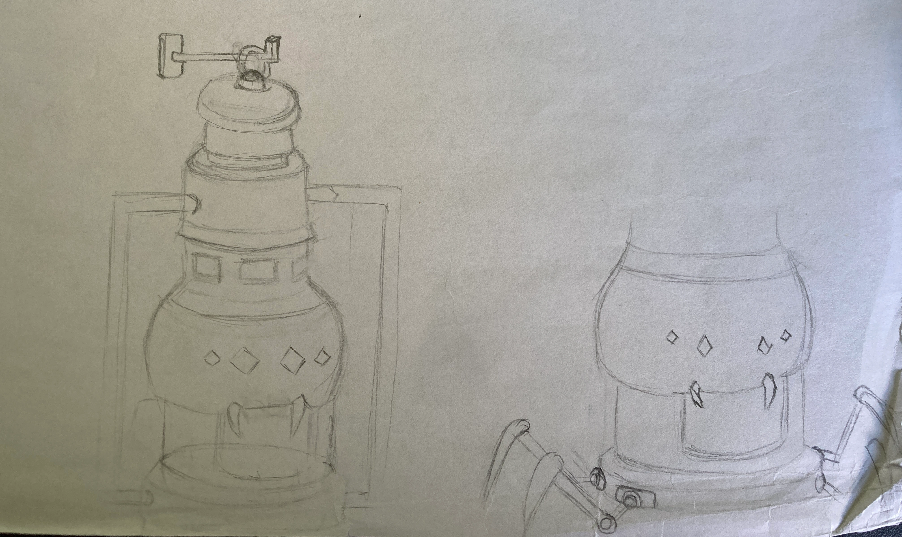
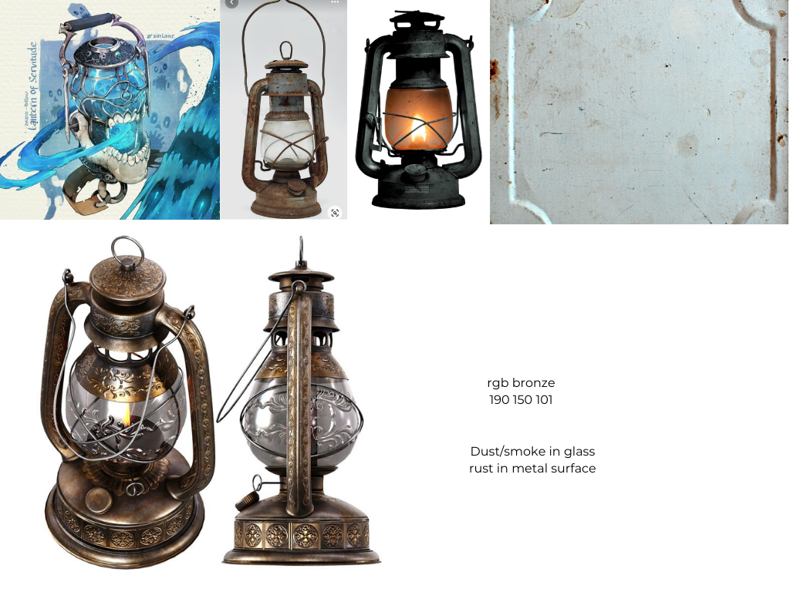

Project type:
Environment Asset.
Project description:
For this project I designed and created an environmental asset based on research to expand my 3D digital sculpting and modeling tools. I used Maya and Mudbox for this project. The main objective for this project is to get more comfortable with digital sculpting and painting and to continue to practice making efficient but detailed models. An additional objective for this project is to begin learning how to present my sculpts in my portfolio by creating turntable videos.
Date:
February 24 - March 9, 2025
Role:
3D Modeler and Texture painter.
Project highlight:
Renders from different angles:





Iterations and Concept:


Reference:

Reflection:
This project helps me learn how to transition between modeling and painting between 2 softwares.
For the iterations, I saw an image of robot spider and decided to add legs to the lantern to make it look more like a spider instead of the handles on the side.
Painting in Mudbox was particularly time consuming, I had to import parts of the model separately to texture paint. This is because if I imported all parts of the model together and painted them, the textures would overlap with each other.